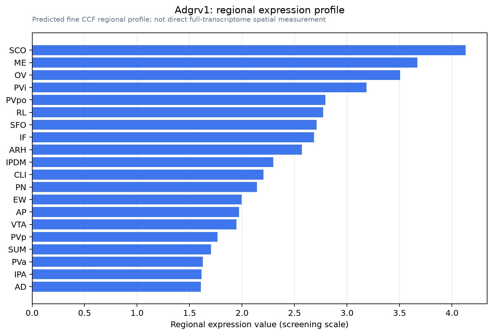

Adgrv1
Adhesion G protein-coupled receptor V1 (ADGRV1) (EC 3.4.-.-) (G protein-coupled receptor 98) (Monogenic audiogenic seizure susceptibility protein 1) (MASS1) (Neurepin) (Protein rueda) (Very large G pr
Spatial tier: RESTRICTED · Class: GPCR · Top region: SCO (Subcommissural organ) · Positive regions: 23/554
44.1Discovery Score
42.2Targetability Score
CEvidence grade C
What this means: Adgrv1: fine CCF profile is restricted toward SCO (top regions: SCO, ME, OV, PVi, PVpo; 23 positive regions); direct spatial validation is still required.
Direct spatial evidence
MERFISH REGION LOCATOR

Regional expression figure

Predicted WMB × fine-CCF profile; not direct full-transcriptome spatial measurement.
Spatial profile
Evidence and specificity
- Evidence status
- PREDICTED_FINE
- Direct sources
- None; predicted localization only
- Exclusive threshold
- 12 positive regions out of 554
- Spatial specificity
- 0.332
- Top-region fraction
- 0.059
- Filter status
- PASS
Interpretation limits
- Cell-type-to-region projection is imputed expression, not direct spatial measurement.
- Adult reference atlases do not establish stability across age, sex, strain, state, or disease.
- Transcript abundance does not guarantee protein abundance or genetic-tool performance.